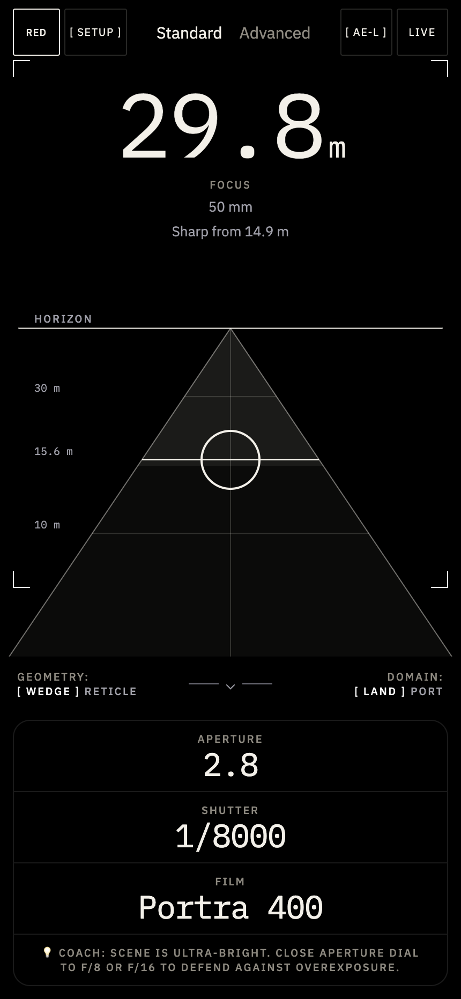
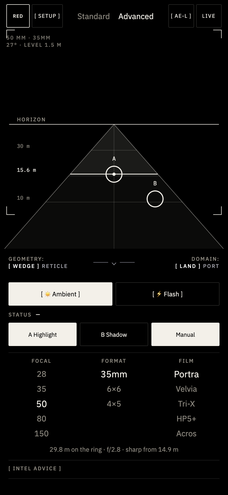
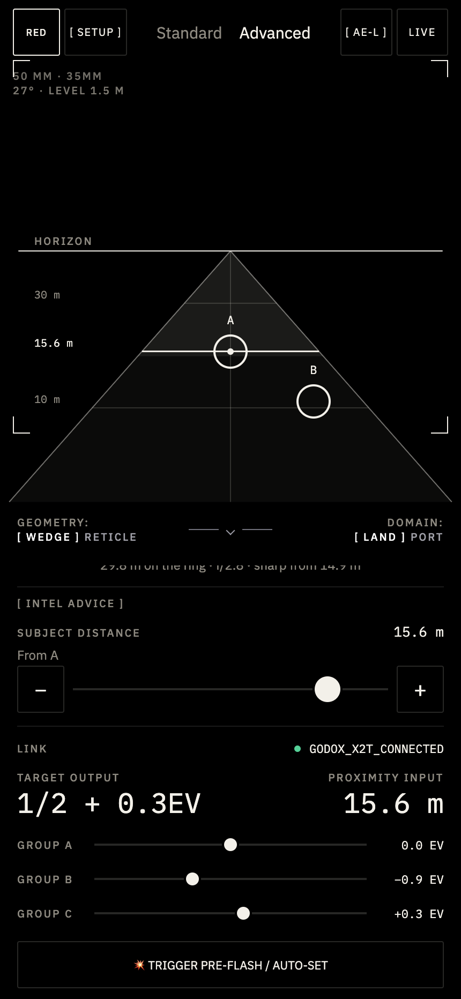
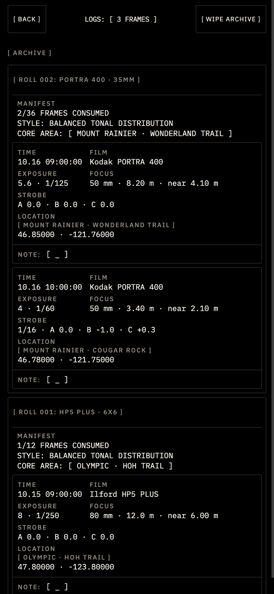

UX Terrain · Analog
Learn photography by making the choices yourself.
Flotrak is an AI-powered analog photography toolkit in prototype. Its integrated Coach helps students connect questions about focus, light, and exposure to the controls in front of them. They can explore a lesson, place metering points in the viewfinder, and adjust settings while learning how to approach a photograph with their film setup.
Make the fundamentals visible
I wanted to build a tool for learning photography. Automated camera settings and filters can produce an image while leaving the choices behind it unclear. FloTrak brings those choices into the interface: where to focus, which shadows to read, and how to approach exposure. Coach brings that learning into the tool: students can ask a photography question, open a focused lesson, and use “Show me” to return to the relevant control. AI supports the explanation while the student makes the adjustment.
Understand the settings
Ask Coach about a setting and connect its explanation to the control.
Place the points yourself
Follow “Show me,” change one control, and observe the wedge or exposure reading.
Learn from the roll
Keep frame settings and notes together so you can return to the choices you made.
Ask Coach. Try the control. See what changes.
Integrated AI Coach
Teach the idea, then bring it to the control
Coach is part of the photography workspace. A student can ask about focus, aperture, shutter speed, ISO, or the two metering points. The prototype pairs short replies with expandable lesson notes and a “Show me” action that returns to the relevant control with an explanation.
“How does aperture affect focus?”
The aperture lesson explains what to watch on the focus wedge.
Find the aperture control
The lesson takes the student back to the control and displays its teaching callout.
Change one setting
Adjust the aperture and observe how the indicated sharp range changes. The explanation now has something visible to refer to.
The learning material moves from individual controls to practice with points A and B, then to creative decisions and experiments with expired film. Point A is the tone the photographer exposes for; point B helps them assess the shadow they want to retain. Those choices stay with the student.
The current implementation combines authored photography lessons, setting-based guidance, and AI-generated replies to broader questions when the AI connection is available. This gives Coach a defined foundation for the core lessons while leaving room for questions about the picture a student wants to make.
01
Keep guidance beside the exposure reading
This earlier Standard-mode exploration groups focus, aperture, shutter speed, and film into a compact reading. An inline Coach prompt suggests a next adjustment. It explores how to connect a numerical reading to something the photographer can try, before the fuller question-and-lesson experience described above.

02
Explore focus and shadows in the viewfinder
The viewfinder exploration uses a focus wedge and labeled distance bands to give the reading a spatial reference. Points A and B let the photographer choose an exposure reference and a shadow to compare. Focal length, format, and film remain visible below the viewfinder.

03
Explore flash controls beside the scene
This flash-control exploration keeps the viewfinder in place and changes the controls below it. Connection status, target output, subject distance, and group adjustments share the workspace. The Godox connection is shown as a design exploration; the screen is not evidence of a tested hardware integration.

04
Keep a record for each frame
The earlier archive exploration groups frame records by roll, with film and format named in the header. Each record brings together exposure, focus, flash information, location, and a note. The design explores how a photographer could return to the choices made for each frame.
